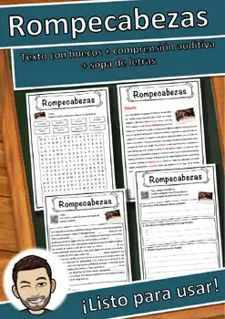
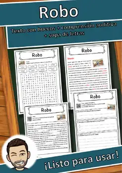
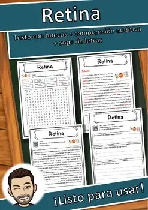

Cultura general
685 recursos de Cultura general en español, sin preparación y con solucionario: fichas de lectura, búsquedas del tesoro y más, filtrables por grado.
685 recursos
Grado

«El taller de velas» – Búsqueda del tesoro de lectura

«El viaje de la papa en la granja» – Búsqueda del tesoro de lectura

«La temporada de calabazas en la granja» – Búsqueda del tesoro de lectura

Misisipi – Ficha de lectura: texto con huecos, comprensión auditiva y sopa de letras

Mesías – Ficha de lectura: texto con huecos, comprensión auditiva y sopa de letras

Menstruación – Ficha de lectura: texto con huecos, comprensión auditiva y sopa de letras

Maravillas del mundo – Ficha de lectura: texto con huecos, comprensión auditiva y sopa de letras

Magnesio – Ficha de lectura: texto con huecos, comprensión auditiva y sopa de letras

Magia – Ficha de lectura: texto con huecos, comprensión auditiva y sopa de letras

Silesia – Ficha de lectura: texto con huecos, comprensión auditiva y sopa de letras

Lot – Ficha de lectura: texto con huecos, comprensión auditiva y sopa de letras

Libro Guinness de los récords – Ficha de lectura: texto con huecos, comprensión auditiva y sopa de letras

Libra esterlina – Ficha de lectura: texto con huecos, comprensión auditiva y sopa de letras

Lengua de señas – Ficha de lectura: texto con huecos, comprensión auditiva y sopa de letras

Las aventuras de Tintín – Ficha de lectura: texto con huecos, comprensión auditiva y sopa de letras

Juan Calvino – Ficha de lectura: texto con huecos, comprensión auditiva y sopa de letras

Job – Ficha de lectura: texto con huecos, comprensión auditiva y sopa de letras

Jesse James – Ficha de lectura: texto con huecos, comprensión auditiva y sopa de letras

Iroqués – Ficha de lectura: texto con huecos, comprensión auditiva y sopa de letras

Ironía – Ficha de lectura: texto con huecos, comprensión auditiva y sopa de letras

Integración – Ficha de lectura: texto con huecos, comprensión auditiva y sopa de letras

Idioma danés – Ficha de lectura: texto con huecos, comprensión auditiva y sopa de letras

ICE – Ficha de lectura: texto con huecos, comprensión auditiva y sopa de letras

Héroe – Ficha de lectura: texto con huecos, comprensión auditiva y sopa de letras

Hugonotes – Ficha de lectura: texto con huecos, comprensión auditiva y sopa de letras

Hipo – Ficha de lectura: texto con huecos, comprensión auditiva y sopa de letras

Henry Dunant – Ficha de lectura: texto con huecos, comprensión auditiva y sopa de letras

Hambre – Ficha de lectura: texto con huecos, comprensión auditiva y sopa de letras

Hada – Ficha de lectura: texto con huecos, comprensión auditiva y sopa de letras

Género fantástico – Ficha de lectura: texto con huecos, comprensión auditiva y sopa de letras

Gigante – Ficha de lectura: texto con huecos, comprensión auditiva y sopa de letras

Funk – Ficha de lectura: texto con huecos, comprensión auditiva y sopa de letras

Faro – Ficha de lectura: texto con huecos, comprensión auditiva y sopa de letras

Espacio de recreación – Ficha de lectura: texto con huecos, comprensión auditiva y sopa de letras

Empatía – Ficha de lectura: texto con huecos, comprensión auditiva y sopa de letras

Adopción – Ficha de lectura: texto con huecos, comprensión auditiva y sopa de letras

AAL – Ficha de lectura: texto con huecos, comprensión auditiva y sopa de letras

Rösti – Ficha de lectura: texto con huecos, comprensión auditiva y sopa de letras

Rueda dentada – Ficha de lectura: texto con huecos, comprensión auditiva y sopa de letras

Divorcio – Ficha de lectura: texto con huecos, comprensión auditiva y sopa de letras

Argón – Ficha de lectura: texto con huecos, comprensión auditiva y sopa de letras

Apellido – Ficha de lectura: texto con huecos, comprensión auditiva y sopa de letras

Amor – Ficha de lectura: texto con huecos, comprensión auditiva y sopa de letras

Rompecabezas – Ficha de lectura: texto con huecos, comprensión auditiva y sopa de letras

Robo – Ficha de lectura: texto con huecos, comprensión auditiva y sopa de letras
Riñón – Ficha de lectura: texto con huecos, comprensión auditiva y sopa de letras

Retina – Ficha de lectura: texto con huecos, comprensión auditiva y sopa de letras

Restaurante – Ficha de lectura: texto con huecos, comprensión auditiva y sopa de letras
No se encontraron recursos. Prueba con otra palabra o con otro filtro.